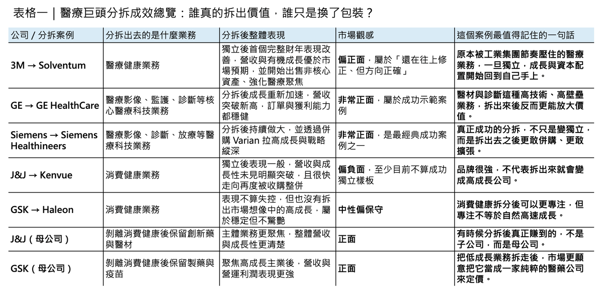
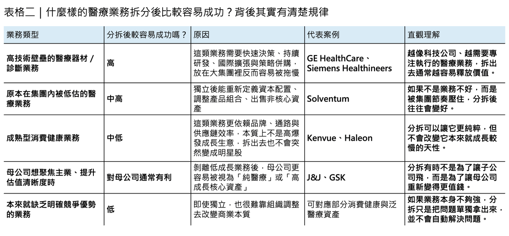

這幾年，全球大型企業在醫療產業做了一個很有意思、而且愈來愈頻繁的動作：把原本放在大集團裡的醫療業務拆出來，讓它獨立上市、獨立融資、獨立做決策。
分享這篇分析
把這篇文章轉給關注生技醫藥、公司研究或資本市場的朋友。
表面上，這看起來像是一場財務操作。
但如果把時間拉長來看，它其實更像是一場組織結構的重新定價：資本市場愈來愈不願意替「什麼都做一點」的老式巨頭付高估值，反而更願意為聚焦、清晰、容易講成長故事的專業公司買單。尤其在醫療器材、診斷、醫療資訊化這些需要快速產品迭代、併購整合與全球市場執行的領域，放在大集團裡看似安全，實際上卻常常意味著資源被稀釋、節奏被拖慢、決策被層層稀釋。
但分拆這件事，從來不是一顆萬靈丹。
有些公司拆完之後，母體與子公司真的出現了「1+1＞2」的效果；有些則只是把原本就不太好做的業務，單獨丟到市場上接受更殘酷的檢驗。也就是說，分拆本身不是答案，分拆後的業務本質才是答案。
最近最值得拿來做案例的，就是 Solventum。
🔹一、Solventum：3M 斷開醫療業務後，市場為什麼重新開始認真看它？

如果今天單獨把 Solventum 拿出來講，很多人第一眼可能還是會有點陌生。但只要補上一句「它就是 3M 拆出來的醫療公司」，整件事就瞬間合理了。
3M 在 2024 年 4 月 1 日正式完成醫療事業分拆，讓 Solventum 以獨立公司身分在紐約證交所掛牌。3M 當時就已明確說明，Solventum 是其原本醫療保健業務的延伸，2023 年銷售約 82 億美元，員工超過 2 萬人。而在分拆之前，3M 早已身陷長年的 Combat Arms Earplugs 訴訟壓力，並於 2023 年同意支付總額 60 億美元的和解方案。換句話說，3M 的分拆不是單純「看見醫療好所以拆」，也帶有很強的資本結構優化與壓力管理意味。
但有趣的地方在於，Solventum 獨立之後的第一個完整財年，交出的成績其實不差。
Solventum 2024 年全年營收為 82.54 億美元；到了 2025 年，公司全年營收進一步來到約 83.25 億美元，有機成長 3.5%，高於前一年的成長節奏。公司在 2026 年 2 月公布的全年結果中還強調，2025 年表現優於原先對銷售與 EPS 的預期。這件事的意義不只在於多賺了一點，而在於：原本放在 3M 大集團中成長偏慢、節奏偏保守的醫療業務，至少已經開始出現獨立後加速的跡象。
更關鍵的是，Solventum 沒有只是被動地等市場重新定價，而是很快開始做真正的資產重整。
2025 年，Solventum 先把原本不夠純粹的 Purification & Filtration 業務，以約 41 億美元賣給 Thermo Fisher Scientific；隨後又在 2025 年底以 7.25 億美元現金、外加最高 1.25 億美元里程碑付款收購 Acera Surgical，補強再生傷口照護。這一買一賣其實很能說明 Solventum 現在的思路：它不再想維持一個「廣義健康科技拼盤」，而是要把自己往更聚焦的醫療公司方向推。
所以，如果要給 Solventum 一個初步判斷：它不是那種一拆出來就立刻爆發式重估的明星案例，但它很可能會是一個典型的「拆分後逐步變好」樣本。
這種公司最怕的是什麼？不是沒有技術，而是原本在大集團裡被當成穩定現金流部門經營，久了之後組織速度就慢下來。
而一旦拆開，管理層開始有明確 KPI、資本配置開始回到自己手上、產品線開始做減法，醫療資產本身的品質反而會被市場重新看見。
🔹二、GE HealthCare 與 Siemens Healthineers：真正把分拆做成「成長放大器」的，是醫材

如果 Solventum 屬於剛起跑、正在修正中的案例，那麼 GE HealthCare 與 Siemens Healthineers 則比較像是這場分拆潮裡，已經證明自己走通模式的兩個代表。
先看 GE HealthCare。
GE HealthCare 在 2023 年正式從 GE 獨立出來，2025 年已是它作為上市公司的第三個完整年度。根據 2026 年 2 月公布的全年財報，GE HealthCare 2025 年營收達 206 億美元，年增 4.8%，有機成長 3.5%，全年訂單有機成長 5.2%，而且管理層直接用「公司在第三個公開上市年交出強勁的一年」來定義這份成績單。
如果再把時間往前推，你會更清楚分拆的效果。
GE 在 2019 年把 BioPharma 業務以約 214 億美元賣給 Danaher，等於先做了一次大型資產清理；之後留下來、再分拆出去的 GE HealthCare，核心就更集中在影像、病人監護、藥物診斷等業務。這代表 GE HealthCare 後來的成長，不是靠原本那個更大的「舊 GE 醫療」自然延伸，而是經歷過先剝離、再聚焦、再獨立之後的成長。從這個角度看，它的 200 億美元營收門檻，其實比表面上看起來更有含金量。

Siemens Healthineers 的故事則更乾脆。
Siemens 在 2018 年就把醫療業務拆出，這是本輪大型工業集團醫療分拆潮裡更早的先行者。2025 財年，Siemens Healthineers 營收達到 233.75 億歐元，可比成長 5.9%，調整後 EBIT 利潤率 16.5%，自由現金流約 27 億歐元。這是一家已經把分拆效益、全球布局、產品線升級與大型併購整合做成閉環的公司。
而它最關鍵的一步，是 2020 年宣布、2021 年完成的 Varian 收購，交易金額約 164 億美元。這筆交易的重要性，不只是把 Siemens Healthineers 的規模做大，而是讓它從傳統影像與診斷公司，進一步變成在腫瘤放射治療鏈條上有更完整話語權的企業。對資本市場來說，這種故事非常好懂：分拆不是為了變小，而是為了變得更專注、更敢買、更能整合。
這兩個案例說明了一件非常重要的事：當被拆出去的是技術壁壘深、產品迭代快、國際擴張能力強的醫療器材與診斷業務時，分拆往往真能放大價值。
因為這類業務最怕的不是競爭，而是被大集團的平均主義拖慢。只要一旦獨立，市場會更願意用 medtech 公司該有的估值與成長邏輯去看它，而不是用「集團裡一個部門」的眼光去看它。
🔹三、Kenvue 與 Haleon：不是每一種醫療相關業務，拆出來都會變更好
但如果把分拆這件事講成「拆出去就會飛」，那就太天真了。真正讓這股分拆潮變得有趣的地方，恰恰在於同樣是醫療相關業務，醫材和消費健康的命運可以完全不同。
先看 Kenvue。
Johnson & Johnson 在 2023 年完成 Kenvue 分拆，正式把原本的消費健康部門獨立出去。Kenvue 旗下有 Tylenol、Neutrogena、Listerine、BAND-AID、Aveeno 這些幾乎人人都認得的品牌，分拆時市場也一度很買單「全球最大 pure-play consumer health 公司」這個故事。
但 Kenvue 拆出來後的表現，至少到目前為止，稱不上驚艷。
2024 年營收約 155 億美元；2025 年全年營收則下滑 2.1%，公司自己把壓力歸因於去庫存與季節性需求偏弱。雖然部分利潤率指標與營運效率有所改善，但整體成長性並沒有因獨立而被重新點燃。更直接的市場訊號是：2025 年 11 月，Kimberly-Clark 已宣布收購 Kenvue，交易對應的合併後年營收規模約 320 億美元。換句話說，Kenvue 拆出來之後，沒有走向獨立壯大的新王國，反而很快又進入下一輪整併。
Haleon 的情況則更微妙。
GSK 在 2022 年把消費健康業務拆出，成立 Haleon。這家公司旗下有 Sensodyne、Voltaren、Panadol、Centrum 等知名品牌，理論上也是一手好牌。只是從官方財報來看，Haleon 並沒有像不少人想像的那樣一拆就疲弱到底。相反地，2025 年它的營收約 112.33 億英鎊，有機成長 3.0%，其中口腔健康業務成長尤其強，整體調整後營業利益也成長 10.5%。所以，若說 Haleon 是失敗案例，其實又太武斷。它更像是一種成長不夠性感、但經營並未失控的情況。
這兩個案例背後最值得注意的，不是品牌不夠強，而是消費健康本身就不是高壁壘、高爆發的賽道。
它更接近穩健現金流生意，重點在品牌維護、通路能力、品類經營與供應鏈效率，而不是靠技術突破帶來高估值重評。這就意味著，即便你把這些業務拆出來，讓它更專注，也不代表它就會瞬間從低成長類別跳到高成長類別。說得更直接一點：不是因為它原本在大集團裡才長不快，而是因為它本質上就沒有醫材或創新藥那麼高的結構性成長。
🔹四、真正賺到的，很多時候反而是母公司
這也是這波分拆潮裡，最值得深挖的一個現象：有時候拆分後最大受益者，不是被拆出去的那家公司，而是留下來的母公司。
Johnson & Johnson 就是最好的例子之一。
Kenvue 分拆後，J&J 專注度進一步集中在 Innovative Medicine 與 MedTech。到了 2025 年，J&J 全年營收達 941.93 億美元，年增 6.0%。更重要的是，它已不再需要用消費健康那種穩健但低成長的業務去稀釋整體敘事，而是更完整地把資源、資本與管理層焦點放在醫療創新本業上。到 2025 年 10 月，J&J 甚至進一步宣布，計畫把 Orthopaedics（DePuy Synthes）也拆成獨立公司。這個動作本身，就顯示分拆對 J&J 來說不是一次性事件，而是一套組織重構方法論。
GSK 的邏輯也很類似。
2025 年，GSK 全年營收達 326.67 億英鎊，固定匯率下成長 7%，其中 Specialty Medicines 成長尤其強勁，營業利潤也來到 79.32 億英鎊。對 GSK 來說，Haleon 分出去之後，雖然帳面上少了一塊營收，但公司變得更像一間真正聚焦於創新藥、疫苗與高成長呼吸免疫資產的製藥公司。這種情況下，資本市場未必會因為你營收少一點而懲罰你，反而可能因為你更純、更容易理解而願意給更高的估值框架。
這裡其實就藏著分拆潮最核心的一個結論：分拆的真正價值，未必只是讓子公司變強，而是讓母公司終於能專心做自己最擅長、也最值得高估值的事。
因此，從投資或產業視角來看，分拆不能只問「拆出去的公司好不好」，還得問：這塊業務原本留在母體裡，是否正在拖累母公司的策略清晰度、資本回報率或成長敘事？
如果答案是肯定的，那麼即使被拆出去的公司未必立刻大爆發，母公司本身仍可能因聚焦而獲益。
🔹五、所以，誰賺翻了？誰後悔了？
如果一定要用最直接的方式總結：
🔹第一類，明顯做對的，是 GE HealthCare 與 Siemens Healthineers。
它們的共同點很清楚：被拆出去的是技術驅動、壁壘深、能靠產品創新與大型併購持續擴張的醫療器材與診斷業務。這類業務一旦從綜合集團裡脫身，反而更容易跑出原本被壓抑的成長速度。
🔹第二類，正在變好的，是 Solventum。
它還不能算完全勝利，因為真正的大幅成長還沒完全展開；但至少從第一個完整財年的節奏看，分拆後它開始做減法、做資產調整、做聚焦，整體方向是對的。對 Solventum 這類公司來說，真正的驗證會發生在未來兩到三年：看它能不能把「恢復成長」變成「持續成長」。
🔹第三類，最容易陷入尷尬的，是 Kenvue 與某種程度上的 Haleon。
它們未必經營不好，但所在賽道的結構決定了：就算拆出來，市場也未必會把它當成高成長平台來重新定價。尤其 Kenvue，很快就重新走向被併購，這已經說明它作為獨立上市公司，並沒有跑出市場原先期待的那條曲線。
但如果再往深一點看，J&J 與 GSK 其實也算贏家。因為它們透過剝離低成長、低估值倍數的消費健康業務，把自己重新塑造成更純粹的醫療創新公司，而這在今天的資本市場裡，本身就很值錢。
🔹六、下一個會是誰？
這可能才是這篇文章真正的問題。因為現在看來，分拆早就不是個別公司的財務工程，而是一場產業性的組織重構。
老牌綜合集團開始承認，醫療業務的節奏與其他工業、消費、材料或一般企業部門，本來就不一樣；而大型醫療集團本身，也開始承認，醫材、骨科、消費健康、製藥之間，未必應該永遠被放在同一個估值籃子裡。
所以未來還會不會有更多分拆？答案幾乎是肯定的。
只是接下來市場會看得更細：如果你拆出去的是一塊高技術、高壁壘、可持續創新的醫療資產，市場可能會替你鼓掌；如果你拆出去的是一塊本來就成熟、成長不快、更多依賴品牌與通路的生意，市場未必會因為你變專注就更買單。
分拆，確實已經成為趨勢。
但它真正的含義不是「切開就會更值錢」，而是：只有當被拆出去的業務，本來就值得被當成一家獨立公司來看，它才會真的變得更值錢。
下一個會是誰？
這個問題，恐怕已經不是「會不會」，而是「什麼時候」。
參考資料：
- [0]: 各公司官網＆公開資料
- [1]:
- 3M Completes Spin-off of Solventum - Apr 1, 2024 Today, 3M completed the planned spin-off of its health care business, which formally launches Solventum Corporation as an independent company. Solventum is listed on the New York Stock Exchange as... news.3m.com
- [2]:
- 3M Announces Filing of Form 10 Registration Statement for Planned Spin-Off of Health Care Business as Solventum - Feb 21, 2024
- 3M (NYSE: MMM) today announced the filing of a Form 10 registration statement with the U.S. Securities and Exchange Commission (SEC) for the planned spin-off of its Health Care business as the... news.3m.com
- [3]: Solventum Reports Fourth Quarter 2024 Financial Results and Introduces 2025 Full-Year Guidance :: Solventum Corporation (SOLV) Reported sales increased 1.9% to $2.074 billion; organic sales increased 2.3% GAAP diluted Earnings Per Share (EPS) of $0.17; adjusted EPS1 of…... investors.solventum.com
- [4]: Thermo Fisher Scientific Inc. - Thermo Fisher Scientific to Acquire Solventum’s Purification and Filtration Business Highly Complementary to Thermo Fisher’s Bioproduction Business and Strengthens Offering in the High Growth Bioprocessing Market Thermo Fisher Scientific Inc. (NYSE: TMO) (“Thermo Fisher”), the world leader in serving science, today announced that the comp ir.thermofisher.com
- [5]: "GE HealthCare reports fourth quarter and full year 2025 financial results | GE HealthCare"
引用本文
若在簡報、報告或社群討論引用，建議附上 Drugnews 原文連結。
Drugnews 編輯部，〈醫療巨頭分拆潮？〉，Drugnews｜藥時事，2026/04/26，https://drugnews.com.tw/articles/2026-04-26-dcard-261370593.html
社群原文
讀完這篇，下一步看
這三篇會優先依主題、標籤與產業脈絡推薦，幫你把同一個問題讀得更完整。

拒絕被併購的 RevMed：Biotech 的獨立時代
圍繞 Revolution Medicines（RevMed）的併購傳聞，一直沒有真正停過。

半年併購 1,340 億美元：Big Pharma 到底在搶什麼？
2026 年才過一半，全球製藥業的併購節奏已經快到讓人有點恍神。

一篇文章講通現在的“禮來”併購邏輯
💡 四個月，五筆交易，若把交易上限全部加總，Eli Lilly 在 2026 年前四個月已經丟出超過 187 億美元的併購火力：1 月的 Ventyx Biosciences、2 月的 Orna Therapeutics、3 月的 Centessa Pharmaceuticals、4 月的 Cro…